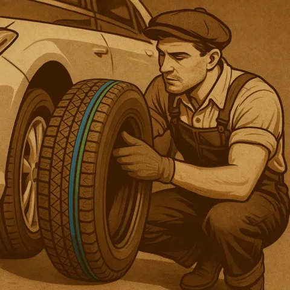

El Enigma de las Líneas en los Cauchos: ¿Señal de Calidad o Simple Fábrica?
Publicado el

Si alguna vez has comprado neumáticos nuevos, habrás notado que algunos tienen líneas de colores en la banda de rodamiento. Estas marcas generan curiosidad y, en ocasiones, confusión entre los conductores. En CORCAUCHOS, especializados en venta de cauchos, baterías y servicios de alineación y balanceo en Barquisimeto, te explicamos el verdadero significado de estas líneas y por qué no debes preocuparte por ellas.
¿Por Qué los Neumáticos Nuevos Tienen Líneas de Colores?
Estas marcas no son indicadores de calidad, tipo de caucho o durabilidad. En realidad, tienen un propósito logístico y de fabricación. Aquí te detallamos las razones:
Líneas de Control de Producción
Durante la fabricación, los neumáticos pasan por un riguroso proceso de inspección. Las líneas de colores (generalmente amarillas, rojas o azules) ayudan a los trabajadores de la planta a:
- Identificar lotes de producción.
- Verificar que el neumático cumple con los estándares de calidad.
- Facilitar el almacenamiento y distribución.
Guías para el Montaje
Algunos cauchos tienen estas marcas para que los técnicos en talleres como CORCAUCHOS puedan instalarlos correctamente, especialmente en casos donde el diseño de la banda de rodamiento tiene una dirección específica.
Diferenciación de Modelos y Medidas
En grandes almacenes o centros de distribución, estas líneas permiten clasificar rápidamente los cauchos por tamaño, tipo o modelo sin necesidad de revisar cada etiqueta.
¿Debo preocuparme si mis Cauchos tienen esas Líneas?
¡No! Estas marcas no afectan el rendimiento, seguridad o durabilidad del caucho. Son simplemente indicadores de fábrica y, con el uso normal, desaparecerán después de los primeros kilómetros de rodamiento.
¿Cuándo debo Cambiar mis Cauchos?
Aunque las líneas de colores no son relevantes para el desempeño del caucho, hay señales clave que indican que necesitas un cambio:
- Baja profundidad del dibujo (menos de 1.6 mm).
- Grietas o deformaciones en la goma.
- Desgaste irregular (puede indicar problemas de alineación o balanceo)
CORCAUCHOS: Expertos en Cauchos en Barquisimeto
¿Necesitas Asesoría o Cambio de Cauchos en Barquisimeto? Visítanos en CORCAUCHOS y nuestro equipo de expertos te ayudará a encontrar los mejores Cauchos para tu vehículo. ¡Garantizamos calidad, durabilidad y el mejor servicio!
¡Visítanos en Barquisimeto y experimenta nuestra Calidad y Servicio!

¿Necesitas este servicio en Barquisimeto? Escríbenos y te atendemos.
Escríbenos por WhatsApp